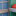

<!doctype html>
<html lang="en">
    <head>
        <meta charset="utf-8">
        <meta http-equiv="X-UA-Compatible" content="IE=edge">
        <meta name="viewport" content="initial-scale=1,user-scalable=no,maximum-scale=1,width=device-width">
        <meta name="mobile-web-app-capable" content="yes">
        <meta name="apple-mobile-web-app-capable" content="yes">
        <link rel="stylesheet" href="css/leaflet.css">
        <link rel="stylesheet" href="css/L.Control.Layers.Tree.css">
        <link rel="stylesheet" href="css/L.Control.Locate.min.css">
        <link rel="stylesheet" href="css/qgis2web.css">
        <link rel="stylesheet" href="css/fontawesome-all.min.css">
        <link rel="stylesheet" href="css/leaflet-search.css">
        <link rel="stylesheet" href="css/filter.css">
<link rel="stylesheet" href="css/nouislider.min.css">
        <link rel="stylesheet" href="css/leaflet-measure.css">
        <style>
        html, body, #map {
            width: 100%;
            height: 100%;
            padding: 0;
            margin: 0;
        }
        </style>
        <title>PETA RUMAH SAKIT DI KOTA BALIKPAPAN</title>
    </head>
    <body>
        <div id="map">
        </div>
        <script src="js/qgis2web_expressions.js"></script>
        <script src="js/leaflet.js"></script>
        <script src="js/L.Control.Layers.Tree.min.js"></script>
        <script src="js/L.Control.Locate.min.js"></script>
        <script src="js/leaflet.rotatedMarker.js"></script>
        <script src="js/leaflet.pattern.js"></script>
        <script src="js/leaflet-hash.js"></script>
        <script src="js/Autolinker.min.js"></script>
        <script src="js/rbush.min.js"></script>
        <script src="js/labelgun.min.js"></script>
        <script src="js/labels.js"></script>
        <script src="js/leaflet-measure.js"></script>
        <script src="js/leaflet-search.js"></script>
        <script src="js/tailDT.js"></script>
<script src="js/nouislider.min.js"></script>
<script src="js/wNumb.js"></script>
        <script src="data/RSKOTABALIKPAPANPOLYGON_1.js"></script>
        <script src="data/RumahsakitBalikpapan_2.js"></script>
        <script>
        var map = L.map('map', {
            zoomControl:false, maxZoom:28, minZoom:1
        }).fitBounds([[-1.3202965678663243,116.67359391633107],[-1.0182587589325192,117.26993736628998]]);
        var hash = new L.Hash(map);
        map.attributionControl.setPrefix('<a href="https://github.com/tomchadwin/qgis2web" target="_blank">qgis2web</a> &middot; <a href="https://leafletjs.com" title="A JS library for interactive maps">Leaflet</a> &middot; <a href="https://qgis.org">QGIS</a>');
        var autolinker = new Autolinker({truncate: {length: 30, location: 'smart'}});
        // remove popup's row if "visible-with-data"
        function removeEmptyRowsFromPopupContent(content, feature) {
         var tempDiv = document.createElement('div');
         tempDiv.innerHTML = content;
         var rows = tempDiv.querySelectorAll('tr');
         for (var i = 0; i < rows.length; i++) {
             var td = rows[i].querySelector('td.visible-with-data');
             var key = td ? td.id : '';
             if (td && td.classList.contains('visible-with-data') && feature.properties[key] == null) {
                 rows[i].parentNode.removeChild(rows[i]);
             }
         }
         return tempDiv.innerHTML;
        }
        // add class to format popup if it contains media
		function addClassToPopupIfMedia(content, popup) {
			var tempDiv = document.createElement('div');
			tempDiv.innerHTML = content;
			if (tempDiv.querySelector('td img')) {
				popup._contentNode.classList.add('media');
					// Delay to force the redraw
					setTimeout(function() {
						popup.update();
					}, 10);
			} else {
				popup._contentNode.classList.remove('media');
			}
		}
        var title = new L.Control({'position':'topright'});
        title.onAdd = function (map) {
            this._div = L.DomUtil.create('div', 'info');
            this.update();
            return this._div;
        };
        title.update = function () {
            this._div.innerHTML = '<h2>PETA RUMAH SAKIT DI KOTA BALIKPAPAN</h2>';
        };
        title.addTo(map);
        var abstract = new L.Control({'position':'bottomleft'});
        abstract.onAdd = function (map) {
            this._div = L.DomUtil.create('div',
            'leaflet-control abstract');
            this._div.id = 'abstract'
                this._div.setAttribute("onmouseenter", "abstract.show()");
                this._div.setAttribute("onmouseleave", "abstract.hide()");
                this.hide();
                return this._div;
            };
            abstract.hide = function () {
                this._div.classList.remove("abstractUncollapsed");
                this._div.classList.add("abstract");
                this._div.innerHTML = 'i'
            }
            abstract.show = function () {
                this._div.classList.remove("abstract");
                this._div.classList.add("abstractUncollapsed");
                this._div.innerHTML = 'Peta ini merupakan peta sebaran rumah sakit yang ada di kota balikpapan, kalimantan timur, republik Indonesia.<br /><br />UIN SYARIF HIDAYATULLAH JAKARTA<br />FAKULTAS ILMU KESEHATAN<br />PROGRAM STUDI KESEHATAN MASYARAKAT<br />PEMINATAN EPIDEMIOLOGI<br /><br />INDAH SYIFA IQROMAH (11221010000027)';
        };
        abstract.addTo(map);
        var zoomControl = L.control.zoom({
            position: 'topleft'
        }).addTo(map);
        L.control.locate({locateOptions: {maxZoom: 19}}).addTo(map);
        var measureControl = new L.Control.Measure({
            position: 'topleft',
            primaryLengthUnit: 'meters',
            secondaryLengthUnit: 'kilometers',
            primaryAreaUnit: 'sqmeters',
            secondaryAreaUnit: 'hectares'
        });
        measureControl.addTo(map);
        document.getElementsByClassName('leaflet-control-measure-toggle')[0].innerHTML = '';
        document.getElementsByClassName('leaflet-control-measure-toggle')[0].className += ' fas fa-ruler';
        var bounds_group = new L.featureGroup([]);
        function setBounds() {
        }
        map.createPane('pane_EsriDarkGray_0');
        map.getPane('pane_EsriDarkGray_0').style.zIndex = 400;
        var layer_EsriDarkGray_0 = L.tileLayer('https://server.arcgisonline.com/arcgis/rest/services/Canvas/World_Dark_Gray_Base/MapServer/tile/{z}/{y}/{x}', {
            pane: 'pane_EsriDarkGray_0',
            opacity: 1.0,
            attribution: '',
            minZoom: 1,
            maxZoom: 28,
        });
        layer_EsriDarkGray_0;
        map.addLayer(layer_EsriDarkGray_0);
        function pop_RSKOTABALIKPAPANPOLYGON_1(feature, layer) {
            var popupContent = '<table>\
                    <tr>\
                        <th scope="row">OBJECTID</th>\
                        <td>' + (feature.properties['OBJECTID'] !== null ? autolinker.link(String(feature.properties['OBJECTID']).replace(/'/g, '\'').toLocaleString()) : '') + '</td>\
                    </tr>\
                    <tr>\
                        <th scope="row">WADMKC</th>\
                        <td>' + (feature.properties['WADMKC'] !== null ? autolinker.link(String(feature.properties['WADMKC']).replace(/'/g, '\'').toLocaleString()) : '') + '</td>\
                    </tr>\
                    <tr>\
                        <th scope="row">jmlh_pdd</th>\
                        <td>' + (feature.properties['jmlh_pdd'] !== null ? autolinker.link(String(feature.properties['jmlh_pdd']).replace(/'/g, '\'').toLocaleString()) : '') + '</td>\
                    </tr>\
                    <tr>\
                        <th scope="row">Luas</th>\
                        <td>' + (feature.properties['Luas'] !== null ? autolinker.link(String(feature.properties['Luas']).replace(/'/g, '\'').toLocaleString()) : '') + '</td>\
                    </tr>\
                </table>';
            var content = removeEmptyRowsFromPopupContent(popupContent, feature);
			layer.on('popupopen', function(e) {
				addClassToPopupIfMedia(content, e.popup);
			});
			layer.bindPopup(content, { maxHeight: 400 });
        }

        function style_RSKOTABALIKPAPANPOLYGON_1_0(feature) {
            switch(String(feature.properties['WADMKC'])) {
                case 'Balikpapan Barat':
                    return {
                pane: 'pane_RSKOTABALIKPAPANPOLYGON_1',
                opacity: 1,
                color: 'rgba(35,35,35,1.0)',
                dashArray: '',
                lineCap: 'butt',
                lineJoin: 'miter',
                weight: 1.0, 
                fill: true,
                fillOpacity: 1,
                fillColor: 'rgba(3,5,26,1.0)',
                interactive: true,
            }
                    break;
                case 'Balikpapan Kota':
                    return {
                pane: 'pane_RSKOTABALIKPAPANPOLYGON_1',
                opacity: 1,
                color: 'rgba(35,35,35,1.0)',
                dashArray: '',
                lineCap: 'butt',
                lineJoin: 'miter',
                weight: 1.0, 
                fill: true,
                fillOpacity: 1,
                fillColor: 'rgba(64,27,68,1.0)',
                interactive: true,
            }
                    break;
                case 'Balikpapan Selatan':
                    return {
                pane: 'pane_RSKOTABALIKPAPANPOLYGON_1',
                opacity: 1,
                color: 'rgba(35,35,35,1.0)',
                dashArray: '',
                lineCap: 'butt',
                lineJoin: 'miter',
                weight: 1.0, 
                fill: true,
                fillOpacity: 1,
                fillColor: 'rgba(133,30,90,1.0)',
                interactive: true,
            }
                    break;
                case 'Balikpapan Tengah':
                    return {
                pane: 'pane_RSKOTABALIKPAPANPOLYGON_1',
                opacity: 1,
                color: 'rgba(35,35,35,1.0)',
                dashArray: '',
                lineCap: 'butt',
                lineJoin: 'miter',
                weight: 1.0, 
                fill: true,
                fillOpacity: 1,
                fillColor: 'rgba(203,27,79,1.0)',
                interactive: true,
            }
                    break;
                case 'Balikpapan Timur':
                    return {
                pane: 'pane_RSKOTABALIKPAPANPOLYGON_1',
                opacity: 1,
                color: 'rgba(35,35,35,1.0)',
                dashArray: '',
                lineCap: 'butt',
                lineJoin: 'miter',
                weight: 1.0, 
                fill: true,
                fillOpacity: 1,
                fillColor: 'rgba(241,97,68,1.0)',
                interactive: true,
            }
                    break;
                case 'Balikpapan Utara':
                    return {
                pane: 'pane_RSKOTABALIKPAPANPOLYGON_1',
                opacity: 1,
                color: 'rgba(35,35,35,1.0)',
                dashArray: '',
                lineCap: 'butt',
                lineJoin: 'miter',
                weight: 1.0, 
                fill: true,
                fillOpacity: 1,
                fillColor: 'rgba(246,172,132,1.0)',
                interactive: true,
            }
                    break;
            }
        }
        map.createPane('pane_RSKOTABALIKPAPANPOLYGON_1');
        map.getPane('pane_RSKOTABALIKPAPANPOLYGON_1').style.zIndex = 401;
        map.getPane('pane_RSKOTABALIKPAPANPOLYGON_1').style['mix-blend-mode'] = 'normal';
        var layer_RSKOTABALIKPAPANPOLYGON_1 = new L.geoJson(json_RSKOTABALIKPAPANPOLYGON_1, {
            attribution: '',
            interactive: true,
            dataVar: 'json_RSKOTABALIKPAPANPOLYGON_1',
            layerName: 'layer_RSKOTABALIKPAPANPOLYGON_1',
            pane: 'pane_RSKOTABALIKPAPANPOLYGON_1',
            onEachFeature: pop_RSKOTABALIKPAPANPOLYGON_1,
            style: style_RSKOTABALIKPAPANPOLYGON_1_0,
        });
        bounds_group.addLayer(layer_RSKOTABALIKPAPANPOLYGON_1);
        map.addLayer(layer_RSKOTABALIKPAPANPOLYGON_1);
        function pop_RumahsakitBalikpapan_2(feature, layer) {
            var popupContent = '<table>\
                    <tr>\
                        <th scope="row">id</th>\
                        <td>' + (feature.properties['id'] !== null ? autolinker.link(String(feature.properties['id']).replace(/'/g, '\'').toLocaleString()) : '') + '</td>\
                    </tr>\
                    <tr>\
                        <th scope="row">keterangan</th>\
                        <td>' + (feature.properties['keterangan'] !== null ? autolinker.link(String(feature.properties['keterangan']).replace(/'/g, '\'').toLocaleString()) : '') + '</td>\
                    </tr>\
                    <tr>\
                        <th scope="row">Foto</th>\
                        <td>' + (feature.properties['Foto'] !== null ? '' : '') + '</td>\
                    </tr>\
                </table>';
            var content = removeEmptyRowsFromPopupContent(popupContent, feature);
			layer.on('popupopen', function(e) {
				addClassToPopupIfMedia(content, e.popup);
			});
			layer.bindPopup(content, { maxHeight: 400 });
        }

        function style_RumahsakitBalikpapan_2_0() {
            return {
                pane: 'pane_RumahsakitBalikpapan_2',
                interactive: true,
            }
        }
        map.createPane('pane_RumahsakitBalikpapan_2');
        map.getPane('pane_RumahsakitBalikpapan_2').style.zIndex = 402;
        map.getPane('pane_RumahsakitBalikpapan_2').style['mix-blend-mode'] = 'normal';
        var layer_RumahsakitBalikpapan_2 = new L.geoJson(json_RumahsakitBalikpapan_2, {
            attribution: '',
            interactive: true,
            dataVar: 'json_RumahsakitBalikpapan_2',
            layerName: 'layer_RumahsakitBalikpapan_2',
            pane: 'pane_RumahsakitBalikpapan_2',
            onEachFeature: pop_RumahsakitBalikpapan_2,
            pointToLayer: function (feature, latlng) {
                var context = {
                    feature: feature,
                    variables: {}
                };
                return L.circleMarker(latlng, style_RumahsakitBalikpapan_2_0(feature));
            },
        });
        bounds_group.addLayer(layer_RumahsakitBalikpapan_2);
        map.addLayer(layer_RumahsakitBalikpapan_2);
        var overlaysTree = [
            {label: ' Rumah sakit Balikpapan', layer: layer_RumahsakitBalikpapan_2},
            {label: 'RS KOTA BALIKPAPAN POLYGON<br /><table><tr><td style="text-align: center;"></td><td>Balikpapan Barat</td></tr><tr><td style="text-align: center;"></td><td>Balikpapan Kota</td></tr><tr><td style="text-align: center;"></td><td>Balikpapan Selatan</td></tr><tr><td style="text-align: center;"></td><td>Balikpapan Tengah</td></tr><tr><td style="text-align: center;"></td><td>Balikpapan Timur</td></tr><tr><td style="text-align: center;"></td><td>Balikpapan Utara</td></tr></table>', layer: layer_RSKOTABALIKPAPANPOLYGON_1},
            {label: "Esri Dark Gray", layer: layer_EsriDarkGray_0},]
        var lay = L.control.layers.tree(null, overlaysTree,{
            //namedToggle: true,
            //selectorBack: false,
            //closedSymbol: '&#8862; &#x1f5c0;',
            //openedSymbol: '&#8863; &#x1f5c1;',
            //collapseAll: 'Collapse all',
            //expandAll: 'Expand all',
            collapsed: true,
        });
        lay.addTo(map);
        setBounds();
        var i = 0;
        layer_RSKOTABALIKPAPANPOLYGON_1.eachLayer(function(layer) {
            var context = {
                feature: layer.feature,
                variables: {}
            };
            layer.bindTooltip((layer.feature.properties['WADMKC'] !== null?String('<div style="color: #323232; font-size: 10pt; font-family: \'Open Sans\', sans-serif;">' + layer.feature.properties['WADMKC']) + '</div>':''), {permanent: true, offset: [-0, -16], className: 'css_RSKOTABALIKPAPANPOLYGON_1'});
            labels.push(layer);
            totalMarkers += 1;
              layer.added = true;
              addLabel(layer, i);
              i++;
        });
        map.addControl(new L.Control.Search({
            layer: layer_RumahsakitBalikpapan_2,
            initial: false,
            hideMarkerOnCollapse: true,
            propertyName: 'keterangan'}));
        document.getElementsByClassName('search-button')[0].className +=
         ' fa fa-binoculars';
        var mapDiv = document.getElementById('map');
        var row = document.createElement('div');
        row.className="row";
        row.id="all";
        row.style.height = "100%";
        var col1 = document.createElement('div');
        col1.className="col9";
        col1.id = "mapWindow";
        col1.style.height = "99%";
        col1.style.width = "80%";
        col1.style.display = "inline-block";
        var col2 = document.createElement('div');
        col2.className="col3";
        col2.id = "menu";
        col2.style.display = "inline-block";
        mapDiv.parentNode.insertBefore(row, mapDiv);
        document.getElementById("all").appendChild(col1);
        document.getElementById("all").appendChild(col2);
        col1.appendChild(mapDiv)
        var Filters = {"id": "int"};
        function filterFunc() {
          map.eachLayer(function(lyr){
          if ("options" in lyr && "dataVar" in lyr["options"]){
            features = this[lyr["options"]["dataVar"]].features.slice(0);
            try{
              for (key in Filters){
                keyS = key.replace(/[^a-zA-Z0-9_]/g, "")
                if (Filters[key] == "str" || Filters[key] == "bool"){
                  var selection = [];
                  var options = document.getElementById("sel_" + keyS).options
                  for (var i=0; i < options.length; i++) {
                    if (options[i].selected) selection.push(options[i].value);
                  }
                    try{
                      if (key in features[0].properties){
                        for (i = features.length - 1;
                          i >= 0; --i){
                          if (selection.indexOf(
                          features[i].properties[key])<0
                          && selection.length>0) {
                          features.splice(i,1);
                          }
                        }
                      }
                    } catch(err){
                  }
                }
                if (Filters[key] == "int"){
                  sliderVals =  document.getElementById(
                    "div_" + keyS).noUiSlider.get();
                  try{
                    if (key in features[0].properties){
                    for (i = features.length - 1; i >= 0; --i){
                      if (parseInt(features[i].properties[key])
                          < sliderVals[0]
                          || parseInt(features[i].properties[key])
                          > sliderVals[1]){
                            features.splice(i,1);
                          }
                        }
                      }
                    } catch(err){
                    }
                  }
                if (Filters[key] == "real"){
                  sliderVals =  document.getElementById(
                    "div_" + keyS).noUiSlider.get();
                  try{
                    if (key in features[0].properties){
                    for (i = features.length - 1; i >= 0; --i){
                      if (features[i].properties[key]
                          < sliderVals[0]
                          || features[i].properties[key]
                          > sliderVals[1]){
                            features.splice(i,1);
                          }
                        }
                      }
                    } catch(err){
                    }
                  }
                if (Filters[key] == "date"
                  || Filters[key] == "datetime"
                  || Filters[key] == "time"){
                  try{
                    if (key in features[0].properties){
                      HTMLkey = key.replace(/[&\/\\#,+()$~%.'":*?<>{} ]/g, '');
                      startdate = document.getElementById("dat_" +
                        HTMLkey + "_date1").value.replace(" ", "T");
                      enddate = document.getElementById("dat_" +
                        HTMLkey + "_date2").value.replace(" ", "T");
                      for (i = features.length - 1; i >= 0; --i){
                        if (features[i].properties[key] < startdate
                          || features[i].properties[key] > enddate){
                          features.splice(i,1);
                        }
                      }
                    }
                  } catch(err){
                  }
                }
              }
            } catch(err){
            }
          this[lyr["options"]["layerName"]].clearLayers();
          this[lyr["options"]["layerName"]].addData(features);
        var i = 0;
        layer_RSKOTABALIKPAPANPOLYGON_1.eachLayer(function(layer) {
            var context = {
                feature: layer.feature,
                variables: {}
            };
            layer.bindTooltip((layer.feature.properties['WADMKC'] !== null?String('<div style="color: #323232; font-size: 10pt; font-family: \'Open Sans\', sans-serif;">' + layer.feature.properties['WADMKC']) + '</div>':''), {permanent: true, offset: [-0, -16], className: 'css_RSKOTABALIKPAPANPOLYGON_1'});
            labels.push(layer);
            totalMarkers += 1;
              layer.added = true;
              addLabel(layer, i);
              i++;
        });
          }
          })
        }
            document.getElementById("menu").appendChild(
                document.createElement("div"));
            var div_id = document.createElement("div");
            div_id.id = "div_id";
            div_id.className = "slider";
            document.getElementById("menu").appendChild(div_id);
            var lab_id = document.createElement('div');
            lab_id.innerHTML  = 'id: <span id="val_id"></span>';
            lab_id.className = 'filterlabel';
            document.getElementById("menu").appendChild(lab_id);
            var reset_id = document.createElement('div');
            reset_id.innerHTML = 'clear filter';
            reset_id.className = 'filterlabel';
            lab_id.className = 'filterlabel';
            reset_id.onclick = function() {
                sel_id.noUiSlider.reset();
            };
            document.getElementById("menu").appendChild(reset_id);
            var sel_id = document.getElementById('div_id');
            noUiSlider.create(sel_id, {
                connect: true,
                start: [1, 15],
                step: 1,
                format: wNumb({
                    decimals: 0,
                    }),
                range: {
                min: 1,
                max: 15
                }
            });
            sel_id.noUiSlider.on('update', function (values) {
            filterVals =[];
            for (value in values){
            filterVals.push(parseInt(value))
            }
            val_id = document.getElementById('val_id');
            val_id.innerHTML = values.join(' - ');
                filterFunc()
            });
        resetLabels([layer_RSKOTABALIKPAPANPOLYGON_1]);
        map.on("zoomend", function(){
            resetLabels([layer_RSKOTABALIKPAPANPOLYGON_1]);
        });
        map.on("layeradd", function(){
            resetLabels([layer_RSKOTABALIKPAPANPOLYGON_1]);
        });
        map.on("layerremove", function(){
            resetLabels([layer_RSKOTABALIKPAPANPOLYGON_1]);
        });
        </script>
    </body>
</html>
